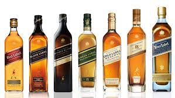
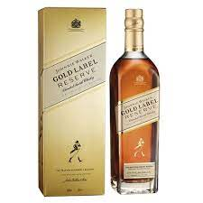

GLENMORANGLE

1867년 시작된 스카치 위스키 브랜드이다.
그린 라벨을 제외한 모든 정규 라인업은 블렌디드 위스키에 속하며 그린 라벨은 블렌디드 몰트 위스키이다. 영국 스코틀랜드의 킬마녹에 있는 양조장에서 만들며 왕실 인증품이자 전 세계에서 매년 1억 병 이상이 소모되는 유명 브랜드이다.
조니워커 라인업
- 레드라벨
- 블랙라벨
- 그린라벨
- 골드라벨/블루라벨등이있다
조니워커 골드라벨 리저브

| 향(nose) | 스모키한 풍미속 상큼한과일향 |
|---|---|
| 추천음용방법 | 조니워커 골드리저브 25ml + 사과주스 |